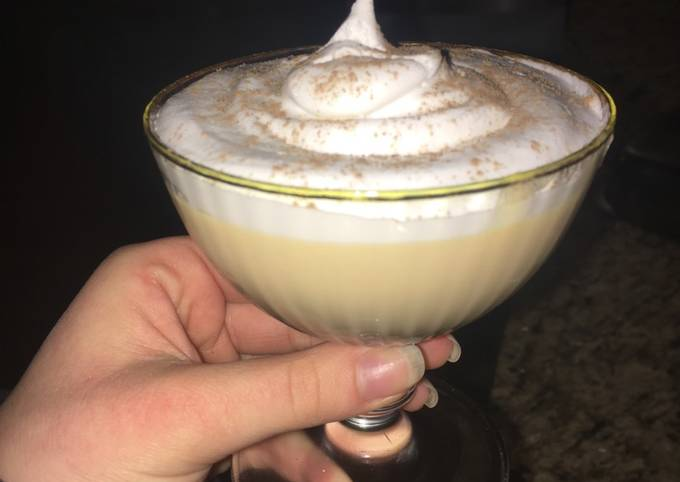

suspiroLimon

ingredientes
- 2 Tarros de leche evaporada IDEAL® NESTLÉ®
- 2 Tarros de leche condensada NESTLÉ®
- Canela en polvo para decorar
- 6 Yemas de huevo
- 1 Cucharada de esencia de vainilla
- Merengue:
- 1/2 Taza de oporto o vino añejado
- 1 Taza de azúcar 200 g
- 100 g de claras 4 a 5 claras de huevos medianos